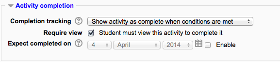
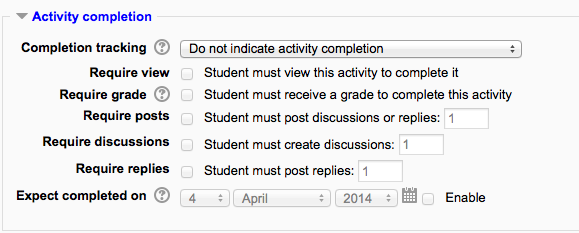
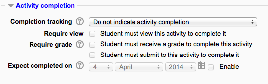
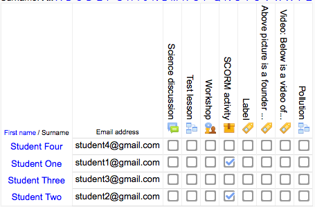

Activity completion¶
Activity completion allows the teacher to set completion criteria in a specific activity’s settings. A check (tick) appears against the activity when the student meets this criterion. The criterion might be viewing, receiving a certain score or a student marking it as complete.
Site administration > Advanced features > Completion tracking must be enabled on the site.
Note: If Completion tracking has been enabled, the teacher will see the Activity completion group in their course settings. However, it is possible to track activity completion without using the Course completion feature. It is also possible to use this feature with the Conditional activities feature. These 3 features can be used separately or in various combinations in an activity.
Activity completion settings¶
Forum completion settings
Assignment completion settings
Activity settings¶
Depending on the type of activity, there are different completion requirements. For example, a Page might have the requirement to require view; a Quiz might have the requirement to require grade while a Forum might have the requirement to require posts/discussions/replies.
Completion tracking
There are three options:
- Do not indicate activity completion - this will not show checks(ticks)next to the activity
- Students can manually mark the activity as completed - students press the check(tick) to change it. (Note: they can do this even without doing the activity!)
- Show activity as complete when conditions are met - the selected completion criteria must be met before the check(tick) will change style
Require view
When this option is turned on, students have to view the activity in order to complete it.
- In most cases, clicking the link is enough to ‘view’ the activity.
- You should usually not turn on the ‘view’ condition if you have other requirements - this makes extra work for the server and it’s unlikely that a student could meet any other conditions without viewing the activity.
Require grade
When this option is turned on, students have to get a grade on the activity in order to complete it. For example, a quiz would be marked completed as soon as the user submits it (so long as it doesn’t contain any “essay” questions).
It does not matter how well the student did. Getting any grade will mark the activity completed.
It is possible to distinguish between ‘pass’ and ‘fail’ grades so that the activity becomes ‘completed, passed’ or ‘completed, not passed’ instead of just ‘completed’. These results show a different icon and alternative text.
To set this up, you need to specify the pass value for this activity’s individual grade:
- Go to the course gradebook by clicking the ‘Grades’ link on the course administration block.
- From the ‘Choose an action’ dropdown, pick ‘Categories and items’.
- Click the Edit icon next to the grade item for this activity.
- Turn on ‘Show Advanced’.
- Type a grade value (e.g. 5.0) in the ‘Grade to pass’ box.
Once you have done this, anybody submitting the quiz will receive either the pass or fail completion icon. If the quiz can be taken multiple times, the completion icon will automatically update whenever the grade does.
There is one limitation: this only works if grades are immediately visible to students. The grade must be neither permanently hidden, nor hidden until a certain date. If a grade is hidden then only the standard ‘completed’ state will be displayed - even once the hidden date has passed.
Require submission
This setting appears in assignments and means that an assignment may be considered as completed once the student has submitted - but before the teacher has had time to grade it.
Expect completed on
The date is not shown to students and is only displayed in the Activity completion report.
Require posts
This setting is seen in forums. For the forum to be classed as “complete” the student must either start a discussion or reply to a discussion. The number of posts they must make can be specified in the box.
Require discussions
This setting is seen in forums. For the forum to be classed as “complete”, the student must start a discussion topic. The number of posts they must make can be specified in the box.
Require replies
This setting is seen in forums. For the forum to be classed as “complete” the student must reply to a discussion. The number of posts they must make can be specified in the box.
Locked completion options¶
If at least one person has completed an activity, completion options are ‘locked’. This is because changing these options may result in unexpected behaviour. For example, if somebody has ticked an activity as manually completed, and you then set it to automatic completion, the activity will become unticked - very confusing for the student who had already ticked it!
Tip: It is best not to unlock options unless you are sure it won’t cause problems - for example, if you know that students don’t have access to the course yet, so it will only be staff who have marked the activity completed when testing.
What happens when you unlock¶
Once you unlock options and then click ‘Save changes’, all completion information for the activity will be deleted and, if possible, regenerated according to the new settings.
If the new completion option is manual, everyone will be set to ‘not completed’ regardless of any previous setting.
If it is automatic then, depending on the options chosen, the system may or may not be able to construct a correct current value for everyone.
- The ‘viewed’ requirement will not work - even if a student has viewed the activity before, it will not be marked completed until they view it again.
- Most other options will be recalculated successfully.
If you change completion options while a student is logged in, they may not see the changes for some minutes.
Required site settings¶
To use activity completion, the feature needs to be enabled for the site by an administrator as follows:
Tip: The default Cron trigger for activity completion is every 10 minutes. Students and Teachers often think any course completion should instantly show up in a report.
Required course settings¶
Administration > Course administration > Edit settings and look for the Completion tracking section. You must enable this setting.
Using Activiy Completion¶
- If this feature is enabled, it is a helpful way for students to be able to track their progress in a course. The student has an easy to see checklist of what they have done so far.
- It can also be linked to Course completion in order to allow both students and teachers to watch progress through a course. As each activity is checked off as “complete”, the student moves futher towards final completion of the course.
- It can also be linked to Conditional activities in order to allow the teacher to set criteria upon which a student is allowed to progress through a course and access materials.
Activity completion icons¶
manual - not yet marked as complete manual - enabled manually completed 
automatically completed automatically failed automatic - not completed automatically passed automatic - enabled
Activity completion report¶
Activity completion info can be viewed by managers, teachers and non-editing teachers (and any other users with the capability report/progress:view) in Administration> Course administration> Reports > Activity completion.
